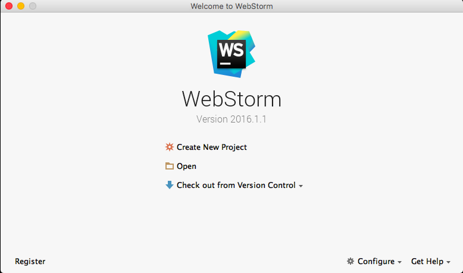
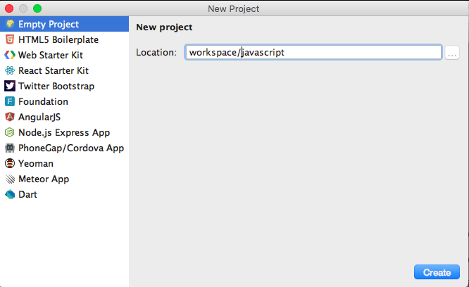
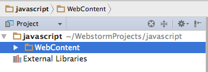
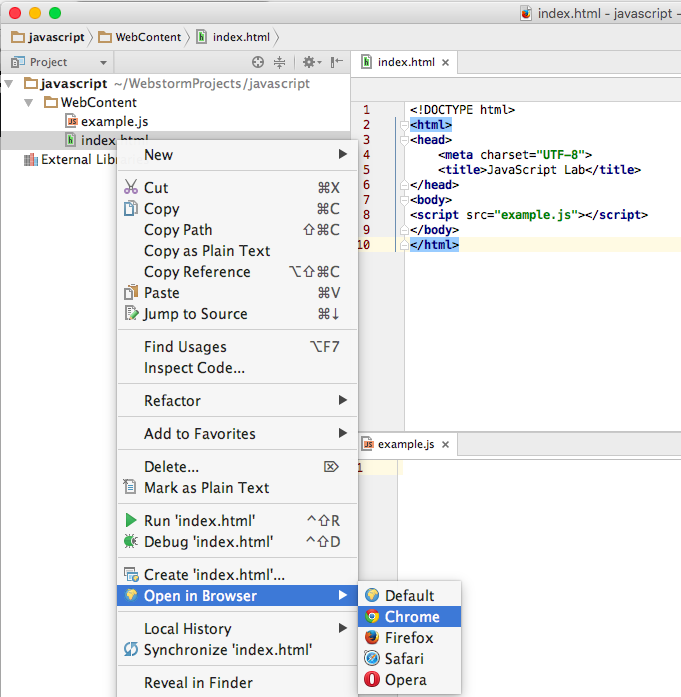
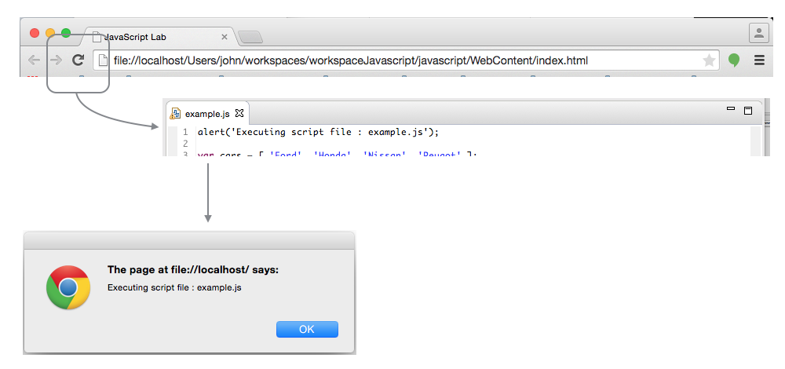
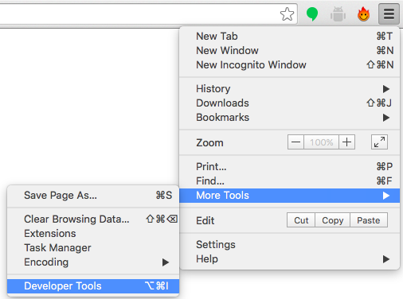
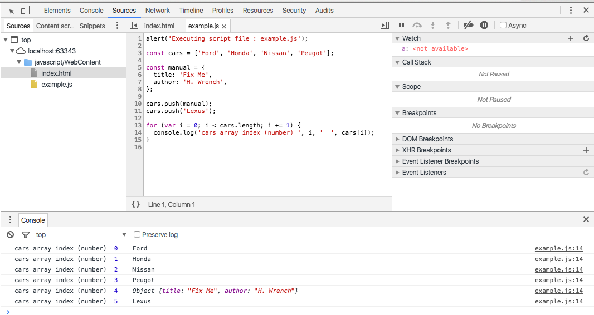
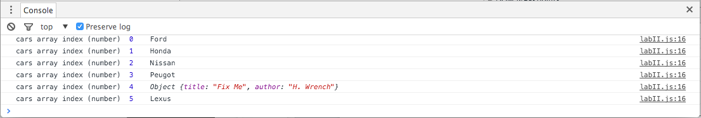

Objectives
Examine some of JavaScript's constructs such as conditionals, loops, arrays, objects, functions and scope. Understanding some concepts such as Truthy and Falsy values. simple static web site, include an external JavaScript file and use Google Chrome developer tools to debug into the script at runtime.
Conditional Code
Sometimes a block of code should only be run under certain conditions. Flow control — via if and else blocks — lets you run code if certain conditions have been met.
// Control flow
const foo = true;
const bar = false;
if (bar) {
// this code will never run
console.log('hello!');
}
if (bar) {
// this code won't run
} else {
if (foo) {
// this code will run
} else {
// this code would run if foo and bar were both false
}
}
While curly braces aren't strictly required around single-line if statements, using them consistently, even when they aren't strictly required, makes for vastly more readable code.
Be mindful not to define functions with the same name multiple times within separate if/else blocks, as doing so may not have the expected result.
Truthy and Falsy Things
In order to use flow control successfully, it's important to understand which kinds of values are "truthy" and which kinds of values are "falsy." Sometimes, values that seem like they should evaluate one way actually evaluate another.
// Values that evaluate to true
'0';
'any string';
[]; // an empty array
{}; // an empty object
1; // any non-zero number
// Values that evaluate to false
''; // an empty string
NaN; // JavaScript's "not-a-number" variable
null;
undefined; // be careful -- undefined can be redefined!
Exercise 5.1: If statement
In WebStorm, create a project 'js-lab-2' comprising a html and js file following a similar model to previous work in this and the earlier lab.
Write a code fragment to do the following:
- Define two variables called option1 and option2.
- Set option1 and option2 to true and false respectively.
- Using an if statement print to the console:
- "both True"
- "both False"
- "option1 only true"
- "option2 only true"
Change the values manually to generate each of the outputs in turn.
This code fragment is to be in a file called conditional.js. Then compose a simple html page which is to load this javascript file. You will need to monitor the console in Google Chrome.
Switch Statements
Rather than using a series of if/else blocks, sometimes it can be useful to use a switch statement instead. Switch statements look at the value of a variable or expression, and run different blocks of code depending on the value.
// A switch statement
switch (foo) {
case 'bar':
alert('the value was bar -- yay!');
break;
case 'baz':
alert('boo baz :(');
break;
default:
alert('everything else is just ok');
}
Exercise 5.2
Write a code fragment containing a switch statement - call it . The switch is to check a strong called grade for good, excellent and 'outstanding` strings. If should log to the console a suitable congratulatory message depending on which string is present.
Run the program by declaring and initialising the grade variable.
Could you find a way to display an alert box asking for a string - and then have the switch log the message based on the value entered in the alert box?
Loops
Loops let a block of code run a certain number of times:
// A for loop
// logs 'try 0', 'try 1', ..., 'try 4'
for (let i = 0; i < 5; i++) {
console.log('try ' + i);
}
Note that in loops, the variable i is not 'scoped' to the loop block even though the keyword let is used before the variable name.
The for loop
A for loop is made up of four statements and has the following structure:
for ([initialisation]; [conditional]; [iteration]) {
[loopBody]
}
The initialisation statement is executed only once, before the loop starts. It gives you an opportunity to prepare or declare any variables.
The conditional statement is executed before each iteration, and its return value decides whether the loop is to continue. If the conditional statement evaluates to a falsey value, then the loop stops.
The iteration statement is executed at the end of each iteration and gives you an opportunity to change the state of important variables. Typically, this will involve incrementing or decrementing a counter and thus bringing the loop closer to its end.
The loopBody statement is what runs on every iteration. It can contain anything. Typically, there will be multiple statements that need to be executed, and should be wrapped in a block ({...}).
Here's a typical for loop:
//A typical for loop
for (let i = 0, limit = 100; i < limit; i++) {
// This block will be executed 100 times
console.log('Currently at ' + i);
// Note: the last log will be 'Currently at 99'
}
The while loop
A while loop is similar to an if statement, except that its body will keep executing until the condition evaluates to false.
while ([conditional]) {
[loopBody]
}
Here's a typical while loop:
// A typical while loop
let i = 0;
while (i < 100) {
// This block will be executed 100 times
console.log('Currently at ' + i);
// increment i
i++;
}
Notice that the counter is incrementing within the loop's body. It's possible to combine the conditional and incrementer, like so:
// A while loop with a combined conditional and incrementer
let i = -1;
while (++i < 100) {
// This block will be executed 100 times
console.log('Currently at ' + i);
}
Notice that the counter starts at -1 and uses the prefix incrementer (++i).
The do-while loop
This is almost exactly the same as the while loop, except for the fact that the loop's body is executed at least once before the condition is tested.
do {
[loopBody]
} while ([conditional])
Here's a do-while loop:
// A do-while loop
do {
// Even though the condition evaluates to false
// this loop's body will still execute once.
alert('Hi there!');
}
while (false);
These types of loops are quite rare since only few situations require a loop that blindly executes at least once. Regardless, it's good to be aware of it.
Breaking and continuing
Usually, a loop's termination will result from the conditional statement not evaluating to true, but it is possible to stop a loop in its tracks from within the loop's body with the break statement.
// Stopping a loop
for (let i = 0; i < 10; i++) {
if (something) {
break;
}
}
You may also want to continue the loop without executing more of the loop's body. This is done using the continue statement.
// Skipping to the next iteration of a loop
for (let i = 0; i < 10; i++) {
if (something) {
continue;
}
// The following statement will only be executed
// if the conditional 'something' has not been met
console.log('I have been reached');
}
Exercise 5.3 Loops
Create and link to a file called loops.js.
In loop.js, and using lab4 as a guide:
- ceate an array object of 8 elements.
- insert some random values into each position in the array.
- write a for loop to print each value to the console
Additionally, write code fragments to:
- count and print out the number of elements greater than zero
- compute the average of all the numbers
Finally, write a code fragment to
- find the largest and smallest numbers in the list
Arrays
Arrays are zero-indexed, ordered lists of values. They are a handy way to store a set of related items of the same type (such as strings), though in reality, an array can include multiple types of items, including other arrays.
To create an array, either use the object constructor or the literal declaration, by assigning the variable a list of values after the declaration.
// A simple array with constructor
const myArray1 = new Array('hello', 'world');
// literal declaration, the preferred way
const myArray2 = ['hello', 'world'];
The literal declaration is generally preferred. See the Google Coding Guidelines for more information.
If the values are unknown, it is also possible to declare an empty Array, and add elements either through functions or through accessing by index:
// Creating empty arrays and adding values
const myArray = [];
// adds 'hello' on index 0
myArray.push('hello');
// adds 'world' on index 1
myArray.push('world');
// adds '!' on index 2
myArray[2] = '!';
'push' is a function that adds an element on the end of the array and expands the array respectively. You also can directly add items by index. Missing indices will be filled with 'undefined'.
// Leaving indices
const myArray = [];
myArray[0] = 'hello';
myArray[1] = 'world';
myArray[3] = '!';
console.log(myArray); // ['hello', 'world', undefined, '!'];
If the size of the array is unknown, 'push' is far more safe. You can both access and assign values to array items with the index.
// Accessing array items by index
let myArray = ['hello', 'world', '!'];
console.log(myArray[2]); // '!'
Exercise 5.4
In your current project (caled js-lab-2) create a file called 'arrays.js' in the js folder. Create a HTML file to load this script.
In arrays.js do the following:
- Declare an array called 'todolist'.
- Initialise this array to contain 5 strings, which describe some simple tasks (make up some).
- write a for loop then logs each of these tasks to the console
Use Google Chrome developers tools -> Console to verify that it works as expected. Implement one more experiment:
- pass the entire array to a single call to console.log
Observe the result.
Array Methods and Properties
.length
The .length property is used to determine the amount of items in an array.
// Length of an array
const myArray = ['hello', 'world', '!'];
console.log(myArray.length); // 3
You will need the .length property for looping through an array:
// For loops and arrays - a classic
const myArray = ['hello', 'world', '!'];
for (let i = 0; i < myArray.length; i = i + 1) {
console.log(myArray[i]);
}
Except when using for/in loops:
// For loops and arrays - alternate method
const myArray = ['hello', 'world', '!'];
for (let i in myArray) {
console.log(myArray[i]);
}
.concat
Concatenate two or more arrays with .concat:
// Concatenating Arrays
const myArray = [2, 3, 4];
const myOtherArray = [5, 6, 7];
// [2, 3, 4, 5, 6, 7]
const wholeArray = myArray.concat(myOtherArray);
.join
.join creates a string representation of the array. Its parameter is a string that works as a separator between elements (default separator is a comma):
// Joining elements
const myArray = ['hello', 'world', '!'];
console.log(myArray.join(' ')); // 'hello world !';
console.log(myArray.join()); // 'hello,world,!'
console.log(myArray.join('')); // 'helloworld!'
console.log(myArray.join('!!')); // 'hello!!world!!!';
.pop
.pop removes the last element of an array. It is the opposite method of .push:
// pushing and popping
const myArray = [];
myArray.push(0);
myArray.push(2);
myArray.push(7);
console.log(myArray); // [0, 2, 7]
myArray.pop();
console.log(myArray); // [0 , 2]
.reverse
As the name suggests, the elements of the array are in reverse order after calling this method:
// reverse
const myArray = ['world', 'hello'];
myArray.reverse();
console.log(myArray); // ['hello', 'world']
.shift
Removes the first element of an array. With .pop and .shift, you can recreate the method of a queue:
// queue with shift() and pop()
const myArray = [];
myArray.push(0); // [0]
myArray.push(2); // [0 , 2]
myArray.push(7); // [0 , 2 , 7]
myArray.shift(); // [2 , 7]
.slice
Extracts a part of the array and returns that part in a new array. This method takes one parameter, which is the starting index:
// slicing
const myArray = [1, 2, 3, 4, 5, 6, 7, 8];
const newArray = myArray.slice(3);
console.log(myArray); // [1, 2, 3, 4, 5, 6, 7, 8]
console.log(newArray); // [4, 5, 6, 7, 8]
.splice
Removes a certain amount of elements and adds new ones at the given index. It takes at least 3 parameters:
// splice method
myArray.splice(index, length, values, ...);
- Index - The starting index.
- Length - The number of elements to remove.
- Values - The values to be inserted at idx.
For example:
// splice example
const myArray = [0, 7, 8, 5];
myArray.splice(1, 2, 1, 2, 3, 4);
console.log(myArray); // [0, 1, 2, 3, 4, 5]
.sort
Sorts an array. It takes one parameter, which is a comparing function. If this function is not given, the array is sorted ascending:
// sorting without comparing function
const myArray = [3, 4, 6, 1];
myArray.sort(); // 1, 3, 4, 6
// sorting with comparing function
function descending(a, b) {
return b - a;
}
const myArray = [3, 4, 6, 1];
myArray.sort(descending); // [6, 4, 3, 1]
console.log(myArray);
The return value of descending (for this example) is important. If the return value is less than zero, the index of a is before b, and if it is greater than zero it's vice-versa. If the return value is zero, the elements index is equal.
.unshift
Inserts an element at the first position of the array:
// unshift
const myArray = [];
myArray.unshift(0); // [0]
myArray.unshift(2); // [2 , 0]
myArray.unshift(7); // [7 , 2 , 0]
.forEach
In modern browsers it is possible to traverse through arrays with a .forEach method, where you pass a function that is called for each element in the array.
The function takes up to three arguments:
- Element - The element itself.
- Index - The index of this element in the array.
- Array - The array itself.
All of these are optional, but you will need at least the 'element' parameter in most cases.
// native forEach
function printElement(elem) {
console.log(elem);
}
function printElementAndIndex(elem, index) {
console.log('Index ' + index + ': ' + elem);
}
function negateElement(elem, index, array) {
array[index] = -elem;
}
myArray = [1, 2, 3, 4, 5];
// prints all elements to the console
myArray.forEach(printElement);
// prints 'Index 0: 1' 'Index 1: 2' 'Index 2: 3' ...
myArray.forEach(printElementAndIndex);
// myArray is now [-1, -2, -3, -4, -5]
myArray.forEach(negateElement);
Exercise 5.5
Take the last code fragment - foreach above, and incorporate into your arrays.js file. In Chrome, load the html page and single step through each of the methods.
Objects
Objects contain one or more key-value pairs. The key portion can be any string. The value portion can be any type of value: a number, a string, an array, a function, or even another object. When one of these values is a function, it’s called a method of the object. Otherwise, they are called properties.
As it turns out, nearly everything in JavaScript is an object — arrays, functions, numbers, even strings — and they all have properties and methods.
// Creating an object literal
const myObject =
{
sayHello: function () {
console.log('hello');
},
myName: 'Rebecca',
};
myObject.sayHello(); // "hello"
console.log(myObject.myName); // "Rebecca"
When creating object literals, note that the key portion of each key-value pair can be written as any valid JavaScript identifier, a string (wrapped in quotes), or a number:
// test
const someString = 'some string';
const myObject =
{
validIdentifier: 123,
someString: 456,
99999: 789,
};
Exercise 5.6
In your current project (called js-lab-2) create a file called 'objects.js' in the js folder. Create a HTML file to load this script.
In objects.js bring in tje first code fragment in this page and run it. Then do the following:
- Introduce a new field into the object called 'email'.
- Initialise the email to some valid address
- Log the email address
- Make the 'sendMail' function also print out the email address as well as the name.
Using this code as a guide, create a new object call myLocation. It should have location-name, latitude, longitude and description as its fields. It should then have a method 'showLocation' to log the current location to the console
Functions
Functions contain blocks of code that need to be executed repeatedly. Functions can take zero or more arguments, and can optionally return a value.
Functions can be created in a variety of ways, two of which are shown below:
Study Airbnb styleguide section on functions.
// Function Declaration (complies with Airbnb styleguide).
function foo() {
/* do something */
}
// Named Function Expression (does not comply with Airbnb styleguide).
const foo = function() {
/* do something */
}
Using Functions
// A simple function
function greet(person, greeting) {
const text = greeting + ', ' + person;
console.log(text);
};
greet('Rebecca', 'Hello');
// A function that returns a value
function greet(person, greeting) {
const text = greeting + ', ' + person;
return text;
};
console.log(greet('Rebecca', 'hello')); // 'hello, Rebecca'
// A function that returns another function
function greet(person, greeting) {
const text = greeting + ', ' + person;
return function() {
console.log(text);
};
};
const greeting = greet('Rebecca', 'Hello');
greeting();
Exercise 5.7
Create a new javascript file called 'function.js' and an associated html file to load it. Incorporate this function here into it:
// A simple function
function greet(person, greeting) {
const text = greeting + ', ' + person;
console.log(text);
};
greet('Rebecca', 'Hello');
Introduce new function call to greet other people - and make sure the console displays the greeting. Change the greeting such that is it displayed in an alert box.
Immediately-Invoked Function Expression (IIFE)
A common pattern in JavaScript is the immediately-invoked function expression. This pattern creates a function expression and then immediately executes the function. This pattern is extremely useful for cases where you want to avoid polluting the global namespace with code — no variables declared inside of the function are visible outside of it.
// An immediately-invoked function expression
(function () {
const foo = 'Hello world';
})();
console.log(foo); // undefined!
Functions as Arguments
In JavaScript, functions are 'first-class citizens' — they can be assigned to variables or passed to other functions as arguments. Passing functions as arguments is an extremely common idiom in jQuery.
// Passing an anonymous function as an argument
function myFn(fn) {
const result = fn();
console.log(result);
}
// logs 'hello world'
myFn(function () {
return 'hello world';
});
// Passing a named function as an argument
function myFn(fn) {
const result = fn();
console.log(result);
};
function myOtherFn() {
return 'hello world';
};
// logs 'hello world'
myFn(myOtherFn);
Scope
"Scope" refers to the variables that are available to a piece of code at a given time. A lack of understanding of scope can lead to frustrating debugging experiences.
When a variable is declared inside of a function using the var keyword, it is only available to code inside of that function — code outside of that function cannot access the variable. On the other hand, functions defined inside that function will have access to to the declared variable.
When a var is declared and initialized within a function, the declaration is silently hoisted to the top of the function but not the assignment. The variable has what is termed function scope. This contrasts to block scope with which we are familiar from Java.
Study the section on Hoisting in the Airbnb style guide.
Prior to ES6 JavaScript possessed function scope (and global scope). This still applies to var type for the purpose of backward compatibility. But two new variable types have been introduced in ES6, const and let, and these have block scope.
Furthermore, variables that are declared inside a function without the var, const or letkeyword are not local to the function — JavaScript will traverse the scope chain all the way up to the window scope to find where the variable was previously defined. If the variable wasn't previously defined, it will be defined in the global scope which can have unexpected adverse consequences.
Whereas it is important for the purpose of code maintenance to recognize and understand the behaviour of the var type, its future use is discouraged. Instead, one should use const and let. Use const where reassignment is not envisaged, otherwise use let.
The first block of code below demonstrates the difference between function scope and block scope:
/**
* The variables a and b have block scope and are 'visible'
* only within the if (flag) {...} block.
* The variable c has function scope and is 'visible' within the entire
* function myFunction block, including within the nested if block.
*/
function myFunction(flag) {
if (flag) {
const a = 1; // The scope is inside the if-block
let b = 2; // The scope is inside the if-block
var c = 3; // The scope is inside the function
// Both a and b in scope
console.log(a); // 1
console.log(b); // 2
console.log(c); // 3
}
// Only b is in scope here.
console.log(a); // Uncaught ReferenceError because a has block scope
console.log(b); // Uncaught ReferenceError because b has block scope
console.log(c); // 3 Because b has function scope
}
myFunction(true);
// Functions have access to variables defined in the same scope
const foo = "hello";
function sayHello(){
console.log(foo);
};
sayHello(); // "hello"
console.log(foo); // "hello"
/**
* Code outside the scope in which a variable was defined does not have access
* to the variable
*/
function sayHello() {
const foo = "hello";
console.log(foo);
};
sayHello(); // hello
console.log(foo); // undefined
/**
* Variables with the same name can exist in different scopes
* with different values
*/
const foo = "world";
function sayHello() {
const foo = "hello";
console.log(foo);
};
sayHello(); // logs "hello"
console.log(foo); // logs "world"
// Functions can see changes in variable values after the function is defined
function myFunction() {
const foo = "hello";
function myFn() {
console.log(foo);
};
foo = "world";
return myFn;
};
const f = myFunction();
f(); // "world"
// Scope insanity
// a self-executing anonymous function
(function() {
const baz = 1;
function bim() {
alert(baz);
};
function bar() {
alert(baz);
};
})();
// baz is not defined outside of the function
console.log(baz);
// bar is defined outside of the anonymous function
// because it wasn't declared with var; furthermore,
// because it was defined in the same scope as baz,
// it has access to baz even though other code
// outside of the function does not
bar();
// bim is not defined outside of the anonymous function,
// so this will result in an error
bim();
Exercie 5.8
Take the each of the above code fragements separately,
- incorporate into a javascript file called 'scope.js'
- debug though each in Chrome. Keep a close eye on the scope variable pane, and confirm that the behaviour is as expected.
Create static web app
In the following steps we demonstrate how to set up a simple static web site, include an external JavaScript file and use Google Chrome developer tools to debug into the script at runtime.
Launch WebStorm and create a new empty project.
- Name it javascript, for example.


Create a new directory named WebContent.

In the WebContent folder in the project create a new html file.
- Name it index.html
Add the following content:
Filename: index.html
<!DOCTYPE html>
<html>
<head>
<meta charset="UTF-8">
<title>Insert title here</title>
</head>
<body>
</body>
</html>
Add a script element before the closing body tag:
<script src="example.js"></script>
Give the page a title: JavaScript Lab
The completed, test html file becomes, therefore:
<!DOCTYPE html>
<html>
<head>
<meta charset="UTF-8">
<title>JavaScript Lab</title>
</head>
<body>
<script src="example.js"></script>
</body>
</html>
Select index.html in the project pane and in the context menu that opens select Open in Browser | Chrome as shown in Figure 4.
The file should open in Chrome revealing a blank page.

JavaScript external script file
Create a file named example.js in the WebContent folder.
This is the file referenced in the html in the previous step:
<script src="example.js"></script>
Add some content to the file:
alert('Executing script file : example.js');
const cars = ['Ford', 'Honda', 'Nissan', 'Peugot'];
const manual = {
title: 'Fix Me',
author: 'H. Wrench',
};
cars.push(manual);
cars.push('Lexus');
for (let i = 0; i < cars.length; i += 1) {
console.log('cars array index (number) ', i, ' ', cars[i]);
}
Refresh the file, index.html, in the browser.
An alert box should pop up with content Executing script file : example.js.
- This confirms the execution path is routed through the script.
- Press OK button to close the alert box.

Debug script
Bring the JavaScript Lab web page into focus (click on it) and open developer tools as shown in Figure 1.

- Note the hot keys that bring this about: using them is usually a much more convenient method of opening the tools pane.

Selected debug features
The following summarizes some of the frequently used features in the developer tools pane:
-
Sources pane
- This pane is shown in Figure 1 below.
- It allows one to view both the html and script files (JavaScript).
-
Break points
- Break points may be positioned as shown. This feature is quite similar to that already encountered in debugging Java in Eclipse.
- To set a breakpoint simply click on the line number.
- To remove a breakpoint click on it.
-
Pause | Run
- Execution pauses at a breakpoint. Pressing this button causes the execution to resume and continue to the next breakpoint or to the end of ths script if no further breakpoints present.
-
Step over
- Allows one to execute the code manually line by line.
-
Watch variable
- One may add a variable here and observe its value.

- Console pane
- The output from control.log is viewable in the Console pane
- The output generated by example.js is shown in Figure 2 here.
